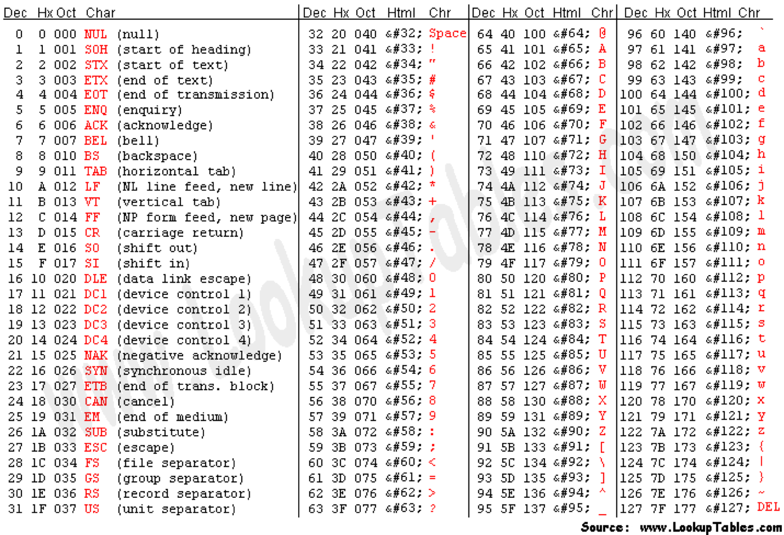
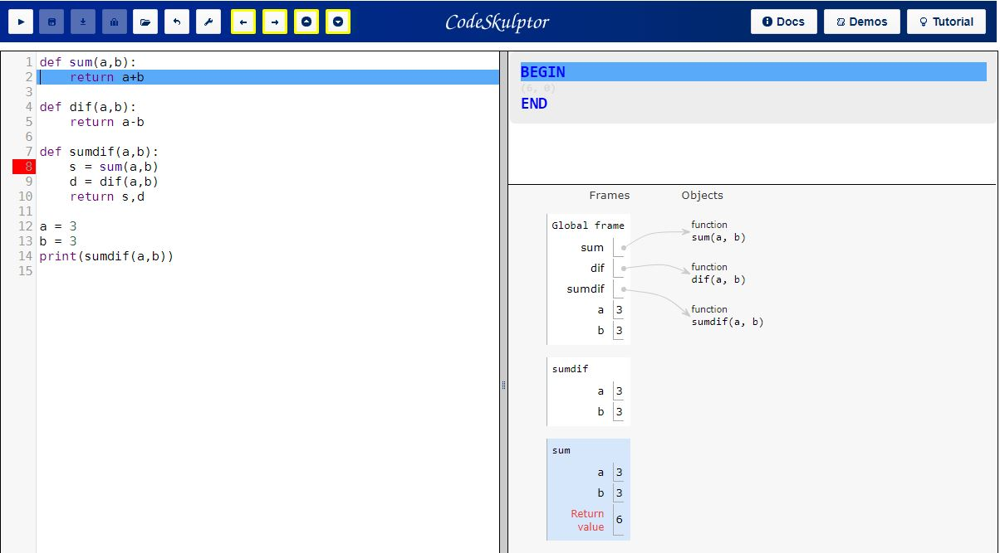

class: center, middle <center><img src="images/ub.png" width="150"></center> # **ALGORÍSMICA** ## Python Jordi Vitrià, Mireia Ribera .blue[jordi.vitria@ub.edu] | .blue[ribera@ub.edu] --- class: summary ### Resum del tema. + **Conceptes de programació**: + Instrucció, + funció, + paràmetres, + crida/invocació, + noms, + expressions, + literals, + comentaris, + variables, + iteracions definides / bucles, + biblioteques (libraries) de funcions / mòduls, + assignacions + asssignacions simples, d'entrada, simultànies --- # Python El lleguatge Python es pot fer servir des de diversos entorns. Els que farem servir nosaltres són dos: + L'interpret Python, que normalment està instal·lat per defecte en la majoria d'ordinadors. Per treballar d'aquesta manera cal fer servir un editor de text i accedir a la consola de l'ordinador per executar el codi de forma interactiva. També podem trobar interprets de Python a certes pàgines la web. + Els *notebooks* de IPython, que són una aplicació web en la que es pot editar i executar codi Python. Poden usar aquests *notebooks* de dues maneres diferents: + Instal·lant al nostre ordinador l'entorn [Anaconda](https://www.anaconda.com/). + Fent servir el servei gratuït al núvol de Google anomenat [Colab](https://colab.research.google.com/). <div class=warnred> Us heu de familiaritzar amb tots aquests entorns durant les classes presencials! </div> Informació sobre Colab: [](https://colab.research.google.com/notebooks/intro.ipynb#) Consola Python: [Exec](https://www.python.org/shell/) --- # Colab Notebooks Cada cop que obriu un notebook en Colab, podeu editar-lo i modificar-lo, però no es guardarà de forma automàtica. Si voleu guardar el que feu en un notebook teniu dues opcions: + Fer servir l'opció `File` del menú per baixar el notebook (en format `.ipynb`). + Guardar-lo al vostre Google Drive, si sou usuaris de Google. --- # Python En aquests apunts suposarem que treballem amb un interpret de Python. El símbol `>` indica una resposta de l'interpret a una sèrie d'instruccions. En el següent exemple, les 3 primeres linies han estat escrites pel programador. La darrera és la resposta de l'interpret. Després de la resposta l'interpret torna a quedar a l'espera de les nostres instruccions. ```python def hola(): print("Hola!") hola() > Hola! ``` --- # Python Si volem executar una seqüència d’instruccions, la forma més directa és **crear/definir** una **funció** (que en aquest cas s’anomena `hola`): ```python def hola(): print("Hola!") ``` Un cop la tenim definida la poden **cridar/invocar**: ```python hola() > Hola! ``` Una funció **no fa res si no la cridem**: ```python def hola(): print("Hola!") ``` per si sol no mostra res a pantalla. --- ## Un programa en Python Les funcions poden tenir **paràmetres** (que van entre els parèntesi): ```python def hola(persona): print("Hola", persona) ``` Que quan es criden han de prendre un valor: ```python hola("Jordi") > Hola Jordi ``` Notebook a Colab: [](https://colab.research.google.com/github/algorismica2020/algorismica2020.github.io/blob/master/notebookscolab/ProgramaPython.ipynb) --- ## Un programa en Python En aquest programa podem veure diversos elements del llenguatge: + comentaris, + variables, + assignacions, + iteracions, + entrada de dades des del teclat, + crida de la funció, + etc. ```python def main(): ''' Comportament caòtic ''' print("Aquest programa implementa un comportament caòtic") x = input("Entra un nombre entre 0 i 1: ") x = float(x) for i in range(10): x = 3.9 * x * (1-x) print(x) main() ``` Notebook a Colab: [](https://colab.research.google.com/github/algorismica2020/algorismica2020.github.io/blob/master/notebookscolab/ProgramaPython2.ipynb ) --- ## Un programa en Python Els elements més importants que tenim per a construir un programa Python són: + **Noms**. Els fem servir per anomenar les funcions i les variables. + Tècnicament s’anomenen identificadors. Han de començar per lletra o `_` que pot ser seguit per qualsevol seqüència de lletres, dígits o subratllats (no espais!). + Distingeixen entre majúscules i minúscules. + Hi ha noms reservats (`and`, `for`, `def`, etc.). + **Expressions**: Són la part de codi que calcula o produeix nous valors de les dades. + L’expressió més simple s’anomena literal, i s’usa per especificar un valor. Hem vist literals numèrics. Un identificador simple també pot ser una expressió (el nom d’una variable). + Podem crear expressions combinant expressions més simples amb operadors: `3.9 + x * (1-x)` + Els operadors matemàtics segueixen les precedències estàndard. --- ## Un programa en Python + **Sortides**. Hi ha la funció `print`, amb els següents arguments: `print(value1, value2,..., sep=' ', end='\n')` + **Assignacions**. + Assignacions simples: `x = 3 + x * (1-x)` + Assignacions d’entrada: `x = input("Entra un valor: ")`. A més a més de nombres, podem entrar qualsevol expressió i avaluar-la: ```python a = eval(input("Entrada: ")) > Entrada: 3+4+5 a > 12 ``` --- ## Un programa en Python + Assignacions simultànies, com per exemple: `sum, diff = x+y, x-y` Aquest tipus d’assignació pot ser molt útil, com per exemple per intercanviar els valors de dues variables. Això no funciona per intercanviar valors!: ```python x = 3 y = 4 x = y y = x print(x,y) > 4 4 ``` Com ho faríeu? -- ```python x = 3 y = 4 x,y = y,x print(x,y) > 4 3 ``` Notebook a Colab: [](https://colab.research.google.com/github/algorismica2020/algorismica2020.github.io/blob/master/notebookscolab/ProgramaPython3.ipynb ) --- ## Un programa en Python + Iteracions (*loops*) definides. Es fa un nombre definit de vegades, i són el tipus més simple d’iteració. ```python for i in range(10): print(i, end=" ") > 0 1 2 3 4 5 6 7 8 9 for j in [0,1,2,3]: print(j*j) > 0 > 1 > 4 > 9 ``` Notebook a Colab: [](https://colab.research.google.com/github/algorismica2020/algorismica2020.github.io/blob/master/notebookscolab/ProgramaPython3.ipynb ) --- ## Recordatori: Les funcions Notebook a Colab: [](https://colab.research.google.com/github/algorismica2020/algorismica2020.github.io/blob/master/notebookscolab/Funcions.ipynb ) --- ## Les dades i Python Les dades que un programa pot manipular i emmagatzemar són de diferents tipus. El tipus de la dada determina quins valors pot tenir i quines operacions es poden fer. ```python type(3) > int type(3.14) > float x = -32 type(x) > int print(3+4, 3+4.0) > 7 7.0 print(10.0/3, 10/3) > 3.3333333333335 3.3333333333335 ``` Els operadors bàsics són: `+`, `-`, `*`, `/`, `**`, `%`, `abs()`. `**` indica la potència, `%` el mòdul, i `abs()` el valor absolut. --- ## Les variables i Python Les dades s'emmagatzemen en variables. A banda dels nombres hi ha també dades i variables per a cadenes de caràcters, caràcters i booleans. ```python type("Pere") > str nom = "Pere" type(nom) > str edat = 20 type(edat) > int ``` Notebook a Colab: [](https://colab.research.google.com/github/algorismica2020/algorismica2020.github.io/blob/master/notebookscolab/Variables.ipynb ) --- ## Els nombres i Python Python també ens dona funcions matemàtiques dins d'un mòdul especial anomenat `math`. Un mòdul no és res més que un fitxer que conté definicions útils de funcions. ```python import math def main(a,b,c): x = (-b+math.sqrt(b**2-4*a*c))/2*a print(x) ``` Quan treballem amb nombres, el generador `range` pot ser molt útil. La seva sintàxi és `range(start, stop, step)`. ```python list(range(10)) > [0,1,2,3,4,5,6,7,8,9] list(range(0,10,3)) > [0,3,6,9] list(range(0,-4,-1)) > [0,-1,-2,-3] ``` --- ## Estructures de control Quan volem canviar el fil del programa en funció de si es compleix una condició o no, farem servir l'estructura `if`: ```python if a==0: print("valor neutre") elif a < 0: print("valor negatiu") elif a == 1: print("valor unitat") else: print("altres valors") ``` Els `elif` són opcionals. En podem posar tants com vulguem. --- ## Exemple Càlcul del promig d'una seqüència de nombres: ```python def mitja(): n = eval(input("Quants nombres tens?")) suma = 0.0 for i in range(n): x = eval(input("Entra un nombre: ")) suma = suma + x return("La mitja és: ", suma/n) ``` És correcte, però no gaire pràctic. Per què? --- ## Estructures de control Per solucionar el problema anterior podem usar un altre *estructura de bucle*: `while`. ```python i = 0 while i < 10: #les instruccions s'executaran mentre es compleixi la condició print(i) i += 1 ``` Llavors podem reescriure el programa anterior com: ```python def mitja(): suma = 0.0 comptador = 0 mesnombres = "s" while mesnombres[0] == 's': x = eval(input("Entra un nombre: ")) suma += x comptador += 1 mesnombres = input("Hi ha més nombres (si o no)?") return suma/comptador ``` Però encara podem fer més eficient aquest codi! --- ## Estructures de control ```python def mitja(): suma = 0.0 comptador = 0 x = eval(input("Entra un nombre (negatiu per acabar): ")) while x > 0: suma += x comptador += 1 x = eval(input("Entra un nombre (negatiu per acabar): ")) return suma/comptador ``` -- ```python def mitja(): suma = 0.0 comptador = 0 xStr = input("Entra un nombre (<Enter> per acabar): ") while xStr != "": x = eval(xStr) suma += x comptador += 1 xStr = input("Entra un nombre (<Enter> per acabar): ") return suma/comptador ``` Notebook a Colab: [](https://colab.research.google.com/github/algorismica2020/algorismica2020.github.io/blob/master/notebookscolab/Control.ipynb ) --- ### Exemple: el factorial d'un nombre. ```python def factorial(num): factorial = 1 if num < 0: print("Entra un enter positiu! ") elif num == 0: print("El factorial de 0 és 1") else: for i in range(1,num+1): factorial *= i print("El factorial de ", num, "és", factorial) ``` --- ### Exemple explicat: el factorial d'un nombre ```python def factorial(num): # definim la funció factorial amb un paràmetre factorial = 1 if num < 0: # condicional print("Entra un enter positiu! ") # només s'executa si es compleix la condició elif num == 0: # condicional print("El factorial de 0 és 1") # només s'executa si es compleix la condició else: # alternativa als condicionals for i in range(1,num+1): # 1,2,3...num factorial *= i # factorial = factorial * i print("El factorial de ", num, "és", factorial) ``` --- ## Python Help Quan no recordemm alguna de Python o no sabem fer alguna cosa, les fonts d'informació més interessants són: + [Lloc Web de Python](https://www.python.org/) + [Documentació Oficial del Llenguatge](https://docs.python.org/3/) + Help als notebooks: + Quan comencem a escriure una instrucció al notebook, per ex. pr i premem el tabulador, Python ens suggereix possibles acabaments + Quan usem una funció a un mòdul, podem fer servir l'insctrucció `help()`: ```python import math help(math.sin) >Help on built-in function sin in module math: > >sin(...) > sin(x) > > Return the sine of x (measured in radians). ``` --- ## Estil de programació Per tal que els nostres programes siguin llegibles i clars, seguirem unes pautes d'escriptura estandarditzades a Python, les directrius [PEP8](https://www.python.org/dev/peps/pep-0008/). Notebook a Colab: [](https://colab.research.google.com/github/algorismica2020/algorismica2020.github.io/blob/master/notebookscolab/EstilProgramacio.ipynb ) --- ## Per a practicar En el següent Notebook trobareu molts exercicis per practicar totes aquestes instruccions i estructures que hem vist de Python. Notebook a Colab: [](https://colab.research.google.com/github/algorismica2020/algorismica2020.github.io/blob/master/notebookscolab/PythonPractica1.ipynb ) --- ## Cadenes de caràcters (*strings*) Un string és una seqüència de caràcters, que es pot emmagatzemar en variables: ```python a = 'Hola' b = "Mireia" print(a,b) > Hola Mireia type(a) > str ``` Podem entrar *strings* des del teclat: ```python nom = input("Quin és el teu nom?") ``` De fet, tot el que entra pel teclat és una cadena de caràcters. Si volem entrar dades d'un altre tipus ho hem de fer així: ```python edat = eval(input("Quina és la teva edat?")) ``` `eval` interpreta el que entrem com una expressió Python i l'avalua. --- ## Cadenes de caràcters (*strings*) Per treballar amb cadenes de caràcters hem de veure com Python les emmagatzema: `H` | `o` | `l` | `a` | | `o` | `l` | `a` - | - | - | - .code[0] | .code[1] | .code[2] | .code[3] | .code[4] | .code[5] | .code[6] | .code[7] Una cadena, és una seqüència de caràcters indexats. Amb els índexs podem accedir a cada element de la cadena o fins i tot a subcadenes: ```python s = "Hello Bob" x = 2 print(s[0], s[x], s[8-2]) > H l B ``` Una operació anomenada *slicing* ens permet accedir a subcadenes de caràcters: ```python print(s[0:3], s[6:9], s[:3], s[3:], s[:]) > Hel, Bob, Hel, lo Bob, Hello Bob ``` --- ## Cadenes de caràcters (*strings*) També podem concatenar (`+`) i repetir (`*`) subcadenes: ```python print("Bread" + " & " * 3 + "Breakfast") > Bread & & & Breakfast len("Bread" + " & " * 3 + "Breakfast") > 23 ``` Exemple: ```python def mes(): mesos = "GenFebMarAbrMaiJunJulAgoSetOctNovDes" n = eval(input("Quin mes vols?")) pos = (n-1) * 3 m = mesos[pos:pos+3] print("L'abreviatura és: ", m) ``` --- ## Cadenes de caràcters (*strings*) L’ordinador emmagatzema els caràcters de forma numèrica. Una forma estàndard s’anomena codificació **ASCII** (*American Standard Code for Information Interchange*), però tal i com el nom indica, no considera els caràcters que no s’usen en l’anglès. Usa 7 bits per caràcter. Per això hi ha el sistema **UniCode**, que considera els caràcters de totes els llengües. Usa 16 bits per caràcter. Per compatibilitat, és un superconjunt de l’ASCII. Python ens dóna funcions per accedir a aquests codis: ```python ord('A') > 65 ord('a') > 97 chr(97) > a ``` --- class: center ## Taula ASCII <center></center> --- ## Cadenes de caràcters (*strings*) Amb la funció `split` puc separar una cadena en una llista en diferents parts, indicant el caràcter separador: ```python cadena = "458.342.120€" llista = cadena.split('.') > ['458', '342', '120€'] ``` Si no indiquem el separador, per defecte és el caracter blanc. ```python cadena = "El gos i el gat, menjàven plegats" llista = cadena.split() > ['El', 'gos', 'i', 'el', 'gat,', 'menjàven', 'plegats'] ``` --- ## Cadenes de caràcters (*strings*) `join`: Un dels usos més estesos de `join` consisteix en convertir llistes a cadenes de caràcters. ```python llista = ['El', 'gos,', 'i', 'el', 'gat,', 'menjàven', 'plegats.'] cadena=" ".join(llista) # l'espai farà de separador print(cadena) > El gos, i el gat, menjàven plegats. ``` `strip`: Elimina els caràcters indicats de l'inici i del final de la cadena, o els espais en blanc si no s'indiquen caràcters específics. ```python "introducció a Python".strip('nio') > 'troducció a Pyth‘ " introducció ".strip() > 'introducció‘ ``` `islower`, `isupper` i `isalpha`: Verifiquen si la cadena és majúscules, minúscules o tota de lletres respectivament. `lower` i `upper`: Converteixen la cadena de majúscules a minúscules i de minúscules a majúscules respectivament. --- ## Cadenes Pots revisar i practicar tots aquests conceptes amb el següent Notebook Notebook a Colab: [](https://colab.research.google.com/github/algorismica2020/algorismica2020.github.io/blob/master/notebookscolab/Cadenes.ipynb) --- ## Funcions Fins ara hem escrit tots els programes en una única funció. Per diverses raons (economia a l’escriure, manteniment del software, disseny) i sobretot quan resolem problemes més complexos val la pena fer servir diferents funcions. Cada funció resoldrà una part del problema, serà com un subprograma, o un programa dins del programa. Recordem que les funcions no són res més que una seqüència d’instruccions amb un nom. Una funció es pot cridar des de qualsevol lloc del programa pel seu nom. ```python def sum(a, b): return a + b a = 3 b = a * 2 c = sum(a, b) c > 9 ``` --- ## Funcions *Scope* és el nom que donem als **llocs d’un programa** en els que *es pot fer referència* a una variable. Només es pot fer referència a les variables definides dins d’una funció dins la pròpia funció, són locals, i per això poden tenir el mateix nom que variables externes. L’única manera que té una funció per veure les variables d’una altra funció és passar-li com a paràmetre. Exemple: ```python a = 7 def assignacio(): a = 5 print("dins, a val ", a) assignacio() print("fora, a val ", a) ``` Què es mostrarà a pantalla? --- ## Crida de funcions Quan Python rep la crida d’una funció, fa quatre coses: + El programa que fa la crida se suspèn/congela en el punt de la crida. + Els paràmetres de la funció passen a prendre els valors de la crida. + S’executa el cos de la funció. + Retorna el control al punt de programa posterior a la crida. ```python def sum(a, b): return a + b def dif(a, b): return a - b def sumdif(a, b): s = sum(a, b) d = dif(a, b) return s, d a = 3 b = 3 print(sumdif(a, b)) > 6 0 ``` --- ## Crida de funcions Veiem-ho amb [Code Skulptor](http://www.codeskulptor.org/viz/index.html) <center></center> --- ## Operadors relacionals Els operadors relacionals ens permeten combinar expressions. El seu resultat és un valor *booleà* (`True[1]` o `False[0]`). Podem comparar tot tipus de dades: ```python 3 < 4 > 1 3 * 4 < 3+4 > 1 "hello" < "Hello" > 0 ``` Els operadors són: ``` < # menor que <= # menor o igual que == # igual que > # major que >= # major o igual que != # diferent a ``` --- ## Operadors booleans Els operadors booleans ens permeten combinar expressions lògiques. El seu resultat és un valor booleà. ```python a = True b = False c = a and b print(c) print(a and b or c) print(a or (not b) and c) ``` `and`: és veritat si i només si els dos operands ho són. `or`: és veritat si al menys un dels dos operands ho és. Notebook a Colab: [](https://colab.research.google.com/github/algorismica2020/algorismica2020.github.io/blob/master/notebookscolab/Booleans.ipynb) --- ## Col·lecions de dades Exemples de col·leccions: + Paraules d’un text. + Estudiants d’un curs. + Dades d’un experiment. + Clients d’un negoci. + Els gràfics que es poden dibuixar en una finestra. Python ens dona suport per a la manipulació d’aquest tipus de dades. --- ## Col·lecions de dades Suposem que volem calcular la **mitja** i la **desviació estàndard** d'un conjunt de `n` nombres. $$ \mu = \frac{1}{n} \sum_{i=1}^n x_i $$ $$ \sigma = \sqrt{\frac{\sum_{i=1}^n (x_i - \mu)^2}{n-1}} $$ Quin problema tenim? --- ## Col·lecions de dades El que necessitem és emmagatzemar una col·lecció de coses (a priori no sabem quantes) en un “objecte”. De fet, aquest tipus d’*objecte* ja l’hem fet servir, i es diu llista: ```python list(range(10)) > [0,1,2,3,4,5,6,7,8,9] a='ABCD' a.split() > ['A','B','C','D'] ``` -- Una llista és una **seqüència ordenada de coses**. Els elements d'una llista s'indexen de la mateixa manera que una cadena de caràcters. De fet les llistes i els strings són conceptualment molt semblants, i podem aplicar-hi operadors semblants. La diferència és el que contenen. Les llistes poden contenir **qualsevol tipus de dades**, incloent “classes” definides pel programador. Les llistes són **mutables**, és a dir, es poden canviar sobre la mateixa estructura (els strings no!). --- ## Col·lecions de dades Les llistes en Python són **dinàmiques**, poden créixer i decréixer durant l’execució del programa. Les llistes en Python són **inhomogènies**, poden contenir tipus diferents de dades. En resum, les llistes són **seqüències mutables d’objectes arbitraris**. Es creen així: ```python a = [1,3,5,7,0] b = ['spam', 0, 3.9] c = [] d = [0] * 50 ``` Podem afegir-hi o borrar elements: ```python nums = [] x = eval(input("Entra un nombre: ")) while x >= 0: nums.append(x) x = eval(input("Entra un nombre: ")) del nums[1] ``` --- ## Col·lecions de dades Donada una llista `l`: + `l.append`: afegeix elements al final. + `l.sort`: ordena els elements. + `l.reverse`: inverteix la llista. + `l.index(x)`: retorna l'índex del primer element igual a `x`. + `l.count(x)`: retorna el nombre de vegades que apareix `x`. + `l.remove(x)`: elimina la primera ocurrència de `x`. + `l.pop(i)`: elimina l'ièssim element de la llista i retorna el seu valor. + `x in l`: retorna una valor booleà en funció de si `x` és a la llista o no. Suposant que tenim una llista formada per milers de milions d'elements, podriem ordenar aquestes operacions en funció del temps que trigarien a executar-se? --- ## Exemple ```python def getNumbers(): nums = [] xStr = eval(input("Entra un nombre (<Enter> per acabar): ")) while xStr != "": x = eval(xStr) nums.append(x) xStr = eval(input("Entra un nombre (<Enter> per acabar): ")) return nums def m(nums): suma = 0.0 for num in nums: suma += num return suma/len(nums) def stdDev(nums, mean): import math sumDev = 0.0 for num in nums: dev = mean - num sumDev += dev * dev return math.sqrt(sumDev/len(nums)-1) data = getNumbers() print("Mitja: ", mean(data), " | Desviació: ", stdDev(data, mean(data))) ``` --- ## Llistes Una llista imbricada és una llista que apareix com a element d’una altra llista. `l = [0,1,3,['a','b']]` Per obtenir un element d’una llista imbricada ho podem fer de dues maneres: ```python # amb dues passes... li = l[3] li[0] > 'a' # o bé ... l[3][0] > 'a' ``` I és que les llistes imbricades es fan servir per representar matrius: ```python m = [[1,2,3],[4,5,6],[7,8,9]] m[0] > [1,2,3] m[1][1] >5 ``` --- ## Diccionaris Python ens proporciona un altre tipus de col·lecció molt útil: els **diccionaris**. La raó de la seva existència és que no sempre serà possible accedir a una dada pel seu índex, sinó per exemple, per algun valor que el defineix (p.e. un empleat pel seu DNI). És a dir, volem accedir a un valor per una **clau**. Python crea els diccionaris així: ```python passwd = {'bill':'clinton', 'barack':'obama'} ``` I ens permet accedir-hi així: ```python passwd['bill'] > clinton ``` Els diccionaris són mutables: ```python passwd['bill'] = 'gates' ``` --- ## Exemple: omplir un diccionari des d'un fitxer. Suposem que tenim una llista d'usuaris i els seus passwords en un fitxer. El format és una línia per usuari formada per dues paraules: el nom d'usuari i el password. ```python passwords = {} f = open('passwords.txt','r') for line in f.readlines(): usr, passw = line.split() passwords[usr] = passw f.close() ``` --- ## Diccionaris ```python p = {'a':'A', 'b':'B', 'c':'C', 'd':'D'} for i in p.keys(): print(i,end=',') > a,b,c,d for i in p.values(): print(i,end=',') > A,B,C,D for i in p.items(): print(i,end=',') > ('a','A'),('b','B'),('c','C'),('d','D') list(p.values()) > ['A','B','C','D'] 'a' in p > True ``` --- ## Tuples Hi ha una altra classe de col·lecció a Python que és semblant a la llista, però que és immutable: la **tupla**. `t = 'a','b','c','d'` o `t = ('a','b','c','d')` Si només hi ha un element s'ha d'escriure amb una coma final: ```python t = ('a',) type(t) > tuple t = ('a') type(t) > str ``` Les operacions son les mateixes que per les llistes (tenint en compte que són immutables!) Notebook a Colab: [](https://colab.research.google.com/github/algorismica2020/algorismica2020.github.io/blob/master/notebookscolab/Coleccions.ipynb) --- ## Referències Cada una de les dades que creem té una referència que podriem entendre com l'adreça de memòria on es pot localitzar. Si executem: ```python a = “banana” b = “banana” ``` `a` i `b` són dos noms diferents amb el mateix valor, però és la "mateixa" cadena de valors o guardem dues vegades a memòria la mateixa cadena de caràcters? -- Cada objecte té un identificador únic, que podem obtenir amb la funció `id`: ```python id(a) > 135044008 id(b) > 135044008 ``` Per tant, en aquest cas Python ha creat una estructura `banana` i les dues variables en fan referència. --- ## Referències Les llistes funcionen diferent (`a` i `b` tenen el mateix valor però no fan referència al mateix objecte): ```python a = [1,2,3] b = [1,2,3] print(id(a),id(b)) > 238870816, 245363636 ``` Com que les variables fan referència a objectes, si una variable fa referència a una altra tenim: ```python a = [1,2,3] b = a print(id(a),id(b)) > 238870856, 238870856 ``` Com que la llista té dos noms, direm que té un **àlies**. Això és perillós per objectes mutables!!! Pels immutables no hi ha problema. --- ## Referències El clonatge és una tècnica per la que fem una còpia de l’objecte en si, no de la referència. Pel cas de les llistes ho podem fer així: ```python a = [1,2,3] b = a[:] b[0] = 5 print(a,b) > [1,2,3] [5,2,3] ``` --- ## Referències Si passem una llista com a **argument** d’una funció, passem una **referència**, no una còpia. Considerem aquesta funció: ```python def head(l): return(l[0]) a = [1,2,3] head(a) > 1 ``` Considerem ara aquesta altra funció: ```python def deleteHead(l): del l[0] return l a = [1,2,3] deleteHead(a) > [2,3] ``` --- ## Referències Si retornem una llista també retornem una referència: ```python def tail(l): return l[1:] a = [1,2,3] rest = tail(a) print(rest, a) > [2,3] [1,2,3] ``` Com que la llista s’ha creat amb `:` és una nova llista. Qualsevol modificació de `rest` no té efectes en `a`. En canvi en el següent cas: ```python numbers = [1,2,3] def test(l): l.reverse() print(numbers) > [3,2,1] ``` Notebook a Colab: [](https://colab.research.google.com/github/algorismica2020/algorismica2020.github.io/blob/master/notebookscolab/Referencies.ipynb) --- ## Exemple: Estadística de les paraules d'un document? ```python def numW(): ''' Aquest programa calcula l'estadística de les paraules d'un document ''' fname = input("Nom del document") text = open(fname, 'r').read() text = text.lower() for ch in '!"·$%&/()=?¿|@#¢∞¬÷÷“”≠¡{}[]+-,.;:-_><': text.replace(ch,' ') words = text.split() counts = {} for w in words: if w in counts: counts[w] = counts[w] + 1 else: counts[w] = 1 n = eval(input("Quantes paraules vols analitzar (les més freqüents)?")) lfreq = [] for w in counts: lfreq.append((counts[w],w)) print(lfreq) lfreq.sort(reverse=True) print(lfreq) for i in range(min(n,len(lfreq))-1): print(lfreq[i][1], lfreq[i][0]) ``` Notebook a Colab: [](https://colab.research.google.com/github/algorismica2020/algorismica2020.github.io/blob/master/notebookscolab/Exemple.ipynb) --- ## Per a practicar En el següent Notebook trobareu molts exercicis per practicar totes aquestes instruccions i estructures que hem vist de Python. Notebook a Colab: [](https://colab.research.google.com/github/algorismica2020/algorismica2020.github.io/blob/master/notebookscolab/PythonPractica2.ipynb )